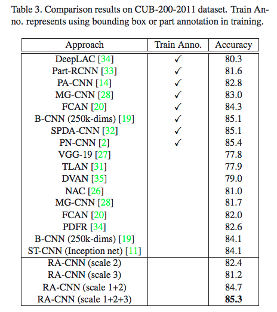

细粒度分类的目的是对大类进行子类的划分。和通用图像分类任务相比，细粒度图像分类任务的难点在于相近子类类间差异可能很微小，而同一子类可能由于姿态、背景、遮挡、视角以及拍摄角度的不同，导致类内差异很大。比如同一种鸟的姿势、背景和视角变化很大，而不同鸟之间的区分性差异仅在于喙、翅膀这些微小的区域。
应用：车辆识别，濒危物种保护，植物识别 …
因为细粒度图像分类的重要信息一般在一些很小的局部区域，所以大部分算法是先定位到目标对象和局部区域，然后提取局部区域特征训练，最后结合目标对象和局部区域的预测来完成分类。
方法主要分为强监督和弱监督两种，强监督模型在训练时，除了类别的标签外，还需要 bounding box 和 part annotation 的人工标注信息。强监督的分类精度比较高，但标注成本太高，所以现在在细粒度图像分类中的趋势是弱监督模型，只用图像级的类别标签，有些弱监督模型的性能已经可以取得强监督模型分类精度。
弱监督模型主要分以下四类：
- 直接用 CNN 进行细粒度图像分类；
- 局部区域定位对齐：用 CNN 提取特征，定位对象的不同部分并对齐，再进行细粒度图像分类；
- 子集网络集合：对高度相似的细粒度分类，用多个神经网络区分；
- 基于attention：找到最有辨别力的区域进行分类。
1. 基于attention的方法
1.1 SCDA (2017)
论文：Selective Convolutional Descriptor Aggregation for
Fine-Grained Image Retrieval
SCDA 先将图像输入预训练的模型，得到全连接层前的卷积特征 $h \times w \times c$ 。对该特征在channel方向上求和得到 $h \times w$ 的2D tensor，称为 aggregation map。之所以这样做，直观的解释是物体出现的位置在特征的多数通道上都会被激活，所以在channel上累加之后，可以把这个位置的响应累积起来。然后用这 $h \times w$ 个值计算出一个均值 $\bar \alpha$ ，原 $h \times w$ 中大于 $\bar \alpha$ 的就保留，小于 $\bar \alpha$ 的丢掉。以这种方式 SCDA 在无位置标签监督的条件下完成物体的定位，再根据定位结果选择卷积特征，分别做Average Pooling 和 Max Pooling，再级联起来组成最终的特征表示。
1.2 RA-CNN (CVPR, 2017)
论文：Look Closer to See Better: Recurrent Attention Convolutional Neural Network
for Fine-grained Image Recognition
微软亚研院的细粒度分类文章，作者认为 region detection 和 fine-grained feature learning 可以相互强化，所以提出RA-CNN用相互强化的方法学习 discriminative region attention 和 region-based feature representation。
RA-CNN 是一个叠加网络，输入是全图像和多尺度的细粒度局部区域，包括三个scale的子网络，每个子网络的网络结构一样，各包含一个分类网络和一个APN (Attention Proposal Network) 网络。
对于输入图片，先用第一个 scale 子网络的分类网络来取特征，然后APN 基于分类网络提取的特征，训练得到 attention区域后，裁剪放大，作为第二个 scale 子网络的输入。同样的过程经过三次就可以得到 3 个scale 子网络的输出结果，由粗到细地生成 region attention，最后将不同 scale 网络的结果进行融合。
APN 网络
APN 网络有两个FC，输出channel 为3，假设检测出来的 attention 区域是正方形，则三个channel 分别对应attention 区域中心点坐标 $t_x$ ， $t_y$ 和正方形边长的一半 $t_l$ 。
Loss
loss 包括scale内的正确分类损失 intra-scale classification loss 和scale 间相邻尺度之间的成对排序损失 inter-scale ranking loss 两项，其中inter-scale ranking loss 是希望后面scale网络的预测比相邻的前一个更准：
$L_{rank}(p_t^{(s)}, p_t^{(s+1)}) = max\{0, p_t^{(s)} - p_t^{(s+1)} + margin\}$
分类
分类时将不同 scale 子网络得到的fc堆叠起来，连一个fc，通过softmax作为最后的分类结果。

2. 局部区域定位对齐
局部区域对齐对因姿势、视角变化导致的类内差异增大的情况很重要。首先定位局部区域，然后进行局部区域对齐，最后在对齐的局部区域上提取特征进行分类。
3. 多网络集合
3.1 Subset feature learning networks (CVPR, 2015)
论文：Subset feature learning for fine-grained category classification
模型包括两部分：
-（1）与目标数据集同域的大规模数据集上训练，然后在目标数据集上微调的域通用网络；
-（2）将视觉上相似的对象聚类为 K 个子集，训练多个CNN学习更容易区分视觉上相似的每个子集的特征。
这种方法的核心问题是，对一张图像，如果确定用哪一个子集对它进行分类。所以会有一个子集选择器CNN（K 个输出的softmax），来选择和输入图像相关度最高的网络进行预测。